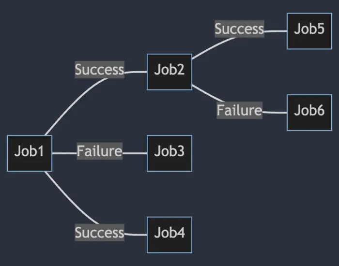

Model Dependencies¶
This chapter explains how to define jobs that should automatically run based on the completion of other jobs. This feature is useful when you have a series of tasks that must be executed in a specific order allowing to build a pipeline of jobs.
Modelling Dependencies with ExecuteWhen¶
In NCronJob, you can define job dependencies using the ExecuteWhen method. This method allows you to specify that a job should run only after another job has completed successfully or faulted.
Services.AddNCronJob(options =>
{
options.AddJob<JobB>().ExecuteWhen(
success: s => s.RunJob<SuccessJob>(),
faulted: f => f.RunJob<FaultedJob>());
});
Both success and faulted are optional so that you can define only one of them if needed. RunJob can be chained to allow multiple jobs to run after the completion of the main job.
This allows very complex job dependencies to be defined in a simple and readable way. 
Passing parameters to dependent jobs¶
The RunJob method allows optional parameters to be passed to the dependent job.
Services.AddNCronJob(options =>
{
options.AddJob<JobB>().ExecuteWhen(success: s => s.RunJob<SuccessJob>("Foo"));
});
Accessing the state of the parent job¶
The JobExecutionContext object passed to the dependent job contains the output of the parent job. This allows access to the state of the parent job. This can be helpful if information should flow from parent to the child job.
public class JobA : IJob
{
public Task ExecuteAsync(IJobExecutionContext context)
{
context.Output = "Hello World";
return Task.CompletedTask;
}
}
public class JobB : IJob
{
public Task ExecuteAsync(IJobExecutionContext context)
{
var parentOutput = context.ParentOutput; // "Hello World"
return Task.CompletedTask;
}
}
// Register the dependency so that JobB runs after JobA automatically
Services.AddNCronJob(options =>
{
options.AddJob<JobA>().ExecuteWhen(success: s => s.RunJob<JobB>());
});
Order of execution between INotificationJobHandler and dependent jobs¶
If a job has a dependency on another job, the dependent job will run after the INotificationJobHandler has been executed and awaited.
Tracing requests of dependencies via CorrelationId¶
Every JobExecutionContext has a CorrelationId property that can be used to trace the execution of dependent jobs. This property is automatically set to the CorrelationId of the parent job and stays the same for all dependent jobs down the chain.
Cancelling dependent jobs¶
To actively cancel dependent jobs, the JobExecutionContext object passed offers a SkipChildren method. This method can be called to prevent dependent jobs from running.
public class JobA : IJob
{
public Task ExecuteAsync(IJobExecutionContext context)
{
context.SkipChildren();
return Task.CompletedTask;
}
}
public class JobB : IJob
{
public Task ExecuteAsync(IJobExecutionContext context)
{
// This job will not run
return Task.CompletedTask;
}
}
builder.Services.AddNCronJob(options =>
{
options.AddJob<JobA>().ExecuteWhen(success: s => s.RunJob<JobB>());
});
Minimal API¶
The ExecuteWhen method can also be used in a Minimal API to define job dependencies:
builder.Services.AddNCronJob(options =>
{
options.AddJob<ImportDataJob>().ExecuteWhen(
success: s => s.RunJob(async (ITransfomerService transformerService) => await transformerService.TransformDataAsync()),
faulted: f => f.RunJob(async (INotificationService notificationService) => await notificationService.SendNotificationAsync()));
});
Getting the parent job’s output in a Minimal API¶
If you pass in a JobExecutionContext to the dependent job, you can access the parent job’s output:
builder.Services.AddNCronJob(options =>
{
options.AddJob<ImportDataJob>().ExecuteWhen(
success: s => s.RunJob(async (IJobExecutionContext context, ITransfomerService transformerService) =>
{
var parentOutput = (MyDataModel)context.ParentOutput;
await transformerService.TransformDataAsync(parentOutput);
}));
});
Defining dependencies for minimal Jobs¶
To define that a job should be executed afterward, you can use the AddJob overload like this:
builder.Services.AddNCronJob(options => {
options.AddJob(async (IMyService myService) => await myService.Run())
.ExecuteWhen(success: b => b.RunJob(() => Console.Write("Run when successful")));
});
Run mutliple jobs after the completion of a job¶
You can run multiple jobs after the completion of a job:
Job A -- successful --> Job B
|- successful --> Job C
Can be achieved in two ways:
Services.AddNCronJob(options =>
{
options.AddJob<JobA>().ExecuteWhen(success: s => s.RunJob<JobB>().RunJob<JobC>());
});
Or by chaining the ExecuteWhen method:
Services.AddNCronJob(options =>
{
options.AddJob<JobA>()
.ExecuteWhen(success: s => s.RunJob<JobB>())
.ExecuteWhen(success: s => s.RunJob<JobC>());
// Register JobB and JobC into the container to avoid warnings
options.AddJob<JobB>();
options.AddJob<JobC>();
});
Note
The order of execution of the dependent jobs is not guaranteed. They will not necessarily run in the order of registration.
In the example above, it can happen that JobC runs before JobB.
If you need to ensure the order of execution, see the next section.
Construct complex dependencies¶
You can construct complex dependencies by using a combination of AddJob and ExecuteWhen methods. Here an example:
Job A -> Job B -> Job C
This can be achieved by:
Services.AddNCronJob(options =>
{
options.AddJob<JobA>().ExecuteWhen(success: s => s.RunJob<JobB>()
.AddJob<JobB>().ExecuteWhen(success: s => s.RunJob<JobC>());
// Register JobC into the container to avoid warnings
options.AddJob<JobC>();
});